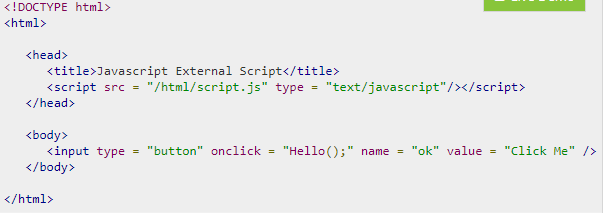
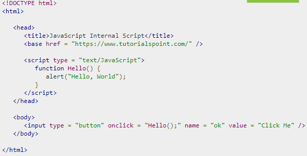

A script is a small piece of program that can add interactivity to your website.
You can write various small functions, called event handlers using any of the scripting language and then you can trigger those functions using HTML attributes.
Now-a-days, only JavaScript and associated frameworks are being used by most of the web developers, VBScript is not even supported by various major browsers.
If you are going to define a functionality which will be used in various HTML documents then it's better to keep that functionality in a separate JavaScript file and then include that file in your HTML documents. A JavaScript file will have extension as .js and it will be included in HTML files using script tag.
You can write your script code directly into your HTML document. Usually we keep script code in header of the document using script tag, otherwise there is no restriction and you can put your source code anywhere in the document but inside script tag.
